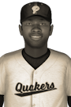

|
|
|  | 1927 #1 Player Chosen By CJBC Sunday, April 3rd, 1927 He may have less experience than most of his Canadian Junior Baseball Championship peers, but that didn't slow Rodney McNeil down at all in 1927. At the age of 20, the Team third baseman has been named the winner of the Canadian Junior Baseball Championship Most Valuable Player Award. He had a .580 batting average and a .646 on-base percentage this year. In 18 games he piled up 47 hits, 9 doubles, 1 triple, no home runs, 31 RBIs and 26 runs scored. "I'm blown away by the season I was able to put together," he said. "I'm looking forward to trying to do it all again next year." He received 8 first place votes out of a possible 16. Surasak Pona of the Team Montana finished second in voting with 5 first place votes, while Dean Ashcroft of the Team Erie finished third with 3 first place votes. Player - Team - First Place - Total Points Rodney McNeil - Team Montana - 8 - 148 Surasak Pona - Team Montana - 5 - 116 Dean Ashcroft - Team Erie - 3 - 111 Danny Sellers - Team Erie - 0 - 86 William Shelley - Team Erie - 0 - 81 Chaiya Junjira - Team New England - 0 - 62 Xavier Robidoux - Team Minnesota - 0 - 59 Carlton Towers - Team Illinois - 0 - 34 Ken Harrell - Team Iowa - 0 - 32 Ryan Forsyth - Team Montana - 0 - 28 Aldo MacNally - Team Michigan - 0 - 25 Donte Green - Team Pennsylvania - 0 - 24 Prayad Adeleye - Team Montana - 0 - 22 Oliver Childs - Team Michigan - 0 - 20 Derek Cournoyer - Team New England - 0 - 19 Alex Culhoun - Team Erie - 0 - 18 Zach Gaumer - Team New England - 0 - 17 Mohammed Jones - Team Pallister - 0 - 15 Weerasak Morillon - Team Manitoba - 0 - 13 B.J. Desjardins - Team Pallister - 0 - 10 Yaseen Bérubé - Team Iowa - 0 - 3 Caden Morrow - Team Erie - 0 - 1 |   |